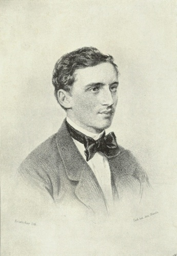
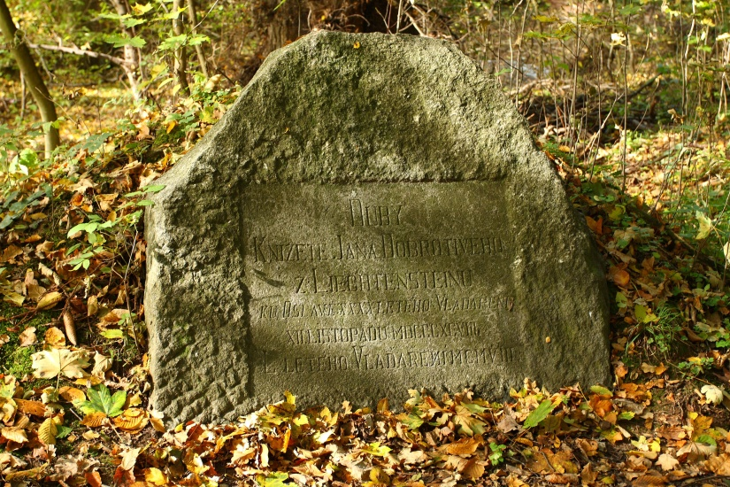

Jan II. z Lichtenštejna a vznik jubilejních památníků
Jan II. z Lichtenštejna, plným jménem Johann Maria Franz Placidus, byl synem knížete Aloise II. Josefa z Lichtenštejna a hraběnky Františky de Paula, rozené Kinské z Wchynicz a Tetowa. Narodil se jako jejich šesté dítě 5. října 1840 na zámku Lednice. Měl celkem devět sourozenců – osm sester a mladšího bratra Františka.
Již v mládí si osvojil znalost několika jazyků – angličtiny, francouzštiny, italštiny a češtiny. Dostalo se mu vynikajícího vzdělání v oblasti národního hospodářství a techniky. Po studiích v Bonnu a v Karlsruhe podnikl rozsáhlé cesty po Evropě, na kterých ho doprovázel sociální reformátor Karl baron von Vogelsang, jenž podporoval jeho zájem o umění a vědu a také sociálně-etické a hospodářské problémy.
Po smrti svého otce knížete Aloise II. dne 12. listopadu 1858 se Jan II. se coby starší z jeho dvou synů stal panovníkem Lichtenštejnského knížectví, převzal vedení rodu a ujal se správy rodového majetku. V té době neměl ještě dokončena studia, a proto v letech 1859–1860 přenesl vladařství na svou matku Františku. Před politickou kariérou upřednostňoval správu svých panství a zájem o vědu a umění. V řízení svých panství na Moravě, v Čechách a v Rakousku byl velmi úspěšný.

Kníže Jan II. po nástupu vlády v roce 1858
Jan II. sídlil na svých rodových panstvích na Moravě, vládl však také Lichtenštejnskému knížectví. V roce 1862 podepsal první lichtenštejnskou ústavu, která dala obyvatelům země rozsáhlá politická práva. Snížil daně a v roce 1868 zrušil lichtenštejnskou armádu. Zaváděním lehkého průmyslu se snažil o zlepšení hospodářské situace Lichtenštejnska.
Během první světové války zachoval kníže neutralitu Lichtenštejnska. Po válce zpřetrhal spojenecké vztahy s Rakousko-Uherskem (resp. nástupnickými státy) a orientoval svou zemi na vytvoření úzkých vztahů se Švýcarskem. V roce 1921 byl v knížectví místo dosavadní rakouské měny zaveden švýcarský frank. V období po 1. světové válce přispěl kníže také vlastními náklady na pomoc Lichtenštejnskému knížectví. 5. října 1921 vydal kníže novou lichtenštejnskou ústavu.
*
Jan II. spravoval rodová panství, která čítala přibližně 600 obcí ve třech státech. Majetek Lichtenštejnů zahrnoval 184 000 hektarů půdy, z toho 110 000 hektarů bylo na Moravě. Lichtenštejnové měli patronátní právo k 237 kostelům. Kníže podporoval lehký průmysl, zakládal školy a nemocnice, budoval cesty, silnice a železnice.
Při plnění vladařských povinností i správě rozsáhlých majetků uplatnil kníže Jan II. svoje vzdělání a přirozenou inteligenci, ale také sociální cítění a diplomatické schopnosti. Během své dlouhé vlády postupně získal pověst vstřícného, štědrého a dobrosrdečného muže – tak vznikl i přídomek „Dobrotivý“, jímž bývá označován. V pamětním sborníku vydaném k 50. výročí jeho vlády se uvádí: „Kníže je velkorysým dobrodincem, od nepaměti věnuje převážnou část příjmů, jež má k dispozici, na veřejné účely. Neexistuje skutečně téměř žádné odvětví veřejné péče, které nepodporoval nejšlechetnějším a nejvytrvalejším způsobem; vynaložil miliony k usnadnění životního údělu chudých, nemocných, neduživých, nouzí trpících či jinak osudem utiskovaných, na vzdělání nemajetných mladých lidí k užitečným povoláním všeho druhu, na podporu umění a vědy, na zřizování veřejných sadů, silnic, mostů, vodovodů, na chudobince, nemocnice, léčebné ústavy, sirotčince, opatrovny pro děti, ústavy pro hluchoněmé a nevidomé, školy a jiná výuková zařízení, kostely, kaple atd. Nesčíslní lidé mu vděčí za zajištěnou a důstojnou existenci nebo vážené životní postavení, příležitost k rozvoji talentu a duševních schopností, znovunabytí zdraví, dosažení úsilí hodných a užitečných cílů.“
12. listopadu 1898 oslavil kníže Jan II. z Lichtenštejna 40. výročí svého panování. Při příležitosti tohoto jubilea se pořádaly četné bohoslužby a slavnosti. Na vybraných místech lichtenštejnských lesních revírů byly vysazeny jubilejní háje, čítající 20 dubů letních, 20 dubů zimních a 18 dubů červených. Počet 58 dubů vyjadřoval věk knížete, 18 dubů červených jeho věk v den nástupu panování. 40 dubů letních a zimních symbolizovalo počet let jeho panování. V každém jubilejním háji vybudoval lesní personál jubilejní památník. Byly to nejčastěji kamenné desky, zasazené do jakýchsi „mohyl“ z neopracovaných kamenů nebo navršených ze zeminy. Na deskách byl vyryt český, německý nebo latinský nápis. Příkladem české verze nápisu může být tento text:
„Duby Knížete Jana Dobrotivého
ku oslavě XXXX letého Vladaření
XII. listopadu MDCCCXCVIII“.

Budování památníků v lesích nebylo náhodou. Kníže Jan II. se velmi zajímal o lesnictví a chov zvěře. V roce 1898 založil Lovecko-lesnické muzeum na Úsově. Stavění pamětních kamenů a výsadbu jubilejních dubových hájů inicioval knížecí lesní rada Julius Wiehl, od roku 1897 ústřední ředitel lichtenštejnských lesů se sídlem v Olomouci.
V roce 1908 se kníže dožil dalšího významného jubilea – 50 let své vlády. K některým pamětním deskám byla v té době doplněna dodatková tabulka s krátkým nápisem, připomínajícím další jubileum. V řadě případů však byl dodatečný text přitesán na původní desku pod první nápis. V blízkosti památníků bylo také toho roku vysazeno dalších 10 dubů.
V listopadu roku 1918 panovala již zcela jiná politická atmosféra. Krátce předtím vznikla Československá republika a kníže začal být vnímán jako představitel starých rakouských pořádků. Na další dodatkové tabulky a jubilejní duby k 60. výročí vlády tak nebylo ani pomyšlení. Ani situace v roce 1928 nebyla příznivější a památníky tak již nebyly nijak doplňovány.
Ve 20. letech 20. století proběhla v Československu první pozemková reforma, při níž Lichtenštejnové přišli přibližně o 60% všech pozemků a také o některé zámky (např. Koloděje nebo Kostelec nad Černými lesy).

Fotografie knížete Jana II. z roku 1928
Jan II. z Lichtenštejna, suverénní kníže a vládce domu Lichtenštejnů, vévoda opavský a krnovský, hrabě z Rietbergu, rytíř řádu zlatého rouna etc., zemřel 11. února 1929 na zámku Valtice. Pohřben byl v lichtenštejnské rodinné hrobce ve Vranově u Brna. Lesní památníky jsou jedny z památek, které dodnes připomínají dlouhou vládu tohoto moudrého panovníka.
Podklady pro tento článek:
Juřík, P.: Moravská dominia Liechtensteinů a Dietrichsteinů, Praha 2009.
Reichel, E.: Johann II. Fürst von und zu Liechtenstein, Eisgrub 1932.
In der Maur, K.: Johann II. Fürst von Liechtenstein, Ein Gedenkblatt zum 50jährigen Regierungsjubiläum, 1908.